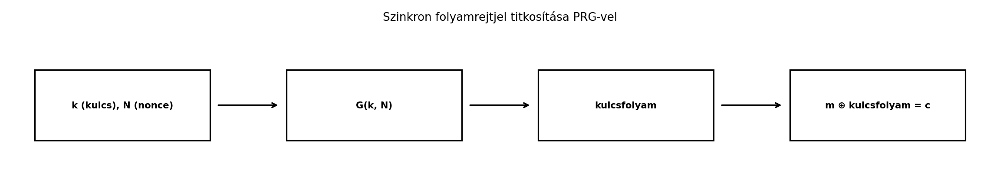

Az előző fejezetben beláttuk, hogy az one-time pad (OTP) tökéletes titkosságot ad, de a kulcsnak ugyanolyan hosszúnak kell lennie, mint az üzenet, és egyszer használatos. Egy böngésző napi TLS-forgalma gigabájtos lehet; nem tudunk előre akkora kulcsot kiosztani és biztonságosan tárolni. A gyakorlati megoldás a pszeudovéletlen generátor (pseudorandom generator, PRG): egy rövid, valódi véletlen seed-ből determinisztikusan hosszú, véletlennek látszó bitsorozatot állítunk elő. Ezt a hosszú bitsorozatot, a kulcsfolyamot (keystream) XOR-öljük az üzenettel, ahogy az OTP-ben tettük. Ha a PRG kimenete megkülönböztethetetlen a valódi véletlentől, akkor a támadó számára a folyamrejtjel gyakorlatilag OTP-ként viselkedik, miközben a titkos kulcs sokkal rövidebb marad.
A szinkron folyamrejtjel működését a következő lépéssor mutatja:

Szövegesen: a küldő és a vevő megoszt egy rövid kulcsot, és megállapodik egy nonce-ban (vagy a küldő elküldi azt a rejtett szöveggel). A PRG ezekből kiszámítja a kulcsfolyamot, amelyet a nyílt szöveggel bitenként XOR-ölünk. A visszafejtés ugyanazzal a kulcsfolyammal történő XOR: .
Definíció. Egy pszeudovéletlen generátor (PRG) egy determinisztikus függvény, ahol , és a bemeneti bit hosszúságú seed valódi véletlen módon lett választva. A PRG kimenetét pszeudovéletlen bitsorozatnak nevezzük. A biztonsági követelmény: a kimenet (ahol egyenletes eloszlású seed) minden hatékony támadó számára megkülönböztethetetlen az hosszúságú, egyenletes eloszlású valódi véletlen bittől. Intuitívan: a támadó nem tudja eldönteni, hogy egy bitsorozatot a PRG termelt-e, vagy egy igazi véletlen érmefeldobás-sorozatból származik.
A formális játékalapú definíciót, a támadó előnyét és a kapcsolódó redukciókat a Redukciós bizonyítások: PRG-ből folyamrejtjel, PRF-ből IND-CPA alfejezetben tárgyaljuk. Itt elégséges az intuitív kép: a PRG olyan, mint egy „véletlen kifutó”, amely néhány bájt seedből nagyon hosszú, előre megjósolhatatlan bitfolyamot hoz létre.
Figyelem. A PRG fogalmával ellentétben a statisztikai ál-véletlen generátorok (például az LCG vagy a Mersenne Twister) nem felelnek meg ennek a definíciónak, mert a kimenetükből a belső állapot visszafejthető, ahogy azt a Véletlenszámok: valódi véletlen, ál-véletlen, kriptográfiai véletlen alfejezetben láttuk. A kriptográfiai PRG-nek a next-bit unpredictability tulajdonsággal kell bírnia: a kimenet első bitjének ismeretében a támadó nem jósolja meg szignifikánsan jobban a következő bitet, mint az valószínűség.
Továbbvitt eredmény. A PRG fogalmát használjuk a ChaCha20 és az ARX-tervezés alfejezetben, ahol a ChaCha20 belső blokkfüggvénye PRG-szerű kulcsfolyamot állít elő, valamint a Redukciós bizonyítások: PRG-ből folyamrejtjel, PRF-ből IND-CPA alfejezetben, ahol a folyamrejtjel biztonságát precízen visszavezetjük a PRG biztonságára.
A folyamrejtjel a PRG-t használja kulcsfolyam előállítására. A konstrukció formálisan:
A függvényt úgy is felfoghatjuk, mint egy kulcsfolyam-generáló függvényt: a kulcs és az nonce által meghatározott bitfolyam. A XOR tulajdonsága miatt a visszafejtés pontosan a titkosítás megismétlése.
Nonce (egyszer használatos érték). A folyamrejtjelnél a nonce nem titkos, de kulcsonként egyedi kell hogy legyen. Nem szabad ugyanazt a nonce-t ugyanazzal a kulccsal kétszer használni, mert akkor a kulcsfolyam is azonos lesz, és a két rejtett szöveg XOR-ölésekor a kulcsfolyam kiesik. A nonce tipikusan a rejtett szöveggel együtt, nyíltan kerül továbbításra, vagy a küldő és a vevő egy közös számlálóból vezeti le. A jelölésben a nonce a PRG bemenetének egyik komponense; a konkrét implementációkban gyakran a nonce-ból és a kulcsból származtatnak egy belső állapotot, majd azt léptetik.
A szinkron folyamrejtjelben a kulcsfolyam minden bitje csak a kulcstól és a nonce-tól függ, tehát a küldő és a vevő kulcsfolyam-állapota független a rejtett szövegtől. Ha egy rejtett szöveg bitje megsérül (átfordul), csak a megfelelő nyílt szöveges bit lesz hibás, a hiba nem terjed szét. Ha viszont egy bit vagy bájt elveszik vagy beszúródik, a vevő kulcsfolyam-pozíciója elcsúszik, és a további visszafejtés értelmetlen, amíg külön mechanizmus (csomagonkénti nonce/számláló, keretezés) újra nem szinkronizál. A szinkronizálás ugyanis azt igényli, hogy a küldő és a vevő pontosan ugyanazt a kulcsfolyam-pozíciót használják.
Az önszinkronizáló folyamrejtjelben ezzel szemben a kulcsfolyam függ a korábbi rejtett szöveg bájtjaitól is. Ilyen megközelítés például a CFB üzemmód, amelyet a CTR, OFB és CFB: blokkrejtjelből folyamrejtjel alfejezetben tárgyalunk. Az önszinkronizáló tulajdonság azt jelenti, hogy ha a rejtett szöveg bizonyos hosszúságú blokkja hibátlanul megérkezett, a vevő automatikusan visszanyeri a szinkronizációt anélkül, hogy ismerné a küldő pontos kulcsfolyam-számlálóját. Ennek ára az, hogy a rejtett szöveg hibái egy korlátozott ablakban a visszafejtett szövegbe is átterjedhetnek.
Tekintsük a következő játék PRG-t: , ahol egy 8 bites seed, pedig a bájtok összefűzése. Ez a függvény 8 bitből 16 bitet állít elő, tehát formailag PRG, de nem kriptográfiai PRG, mert a kimenet lineárisan függ a seedtől, és a támadó a kimenetből könnyen visszakapja a seedet.
Legyen (decimális). Ekkor:
Tehát . Ez a példa jól mutatja a PRG alapötletét: rövid seedből hosszabb kimenet keletkezik. Ugyanakkor azonnal érthető, hogy ez a PRG nem biztonságos, hiszen a kimenet ismeretében a seedet inverz szorzással vissza lehet határozni.
Legyen a közös kulcs , a nonce pedig . A folyamrejtjel kulcsfolyama legyen (három bájt, csak a példa kedvéért). Titkosítsuk az („HEL”) nyílt szöveget:
A vevő ugyanazzal a kulcsfolyammal XOR-ölve visszakapja -et. Ha azonban a küldő ugyanazt a párt használja egy második üzenethez, mondjuk („ABC”), akkor
A támadó, aki csak a két rejtett szöveget látja, kiszámíthatja:
Ez éppen , mert a közös kulcsfolyam kiesik:
A támadó tehát a két üzenet XOR-ét kapja meg, és a Az OTP korlátai és a kulcsújrahasználat alfejezetben megismert crib dragging technikával gyakran visszafejtheti mindkét üzenetet.
A folyamrejtjel rejtett szövege malleabilis (alakítható): a támadó a kulcs ismerete nélkül megváltoztathatja a nyílt szöveget, ha ismeri a struktúráját. Tegyük fel, hogy a támadó elfogja a rejtett szöveget. Választhat egy tetszőleges bitmaszkot, és elküldheti a rejtett szöveget. A vevő visszafejtése:
A támadó tehát úgy tudja átfordítani
bizonyos bitjeit, hogy nem ismeri sem a kulcsfolyamot, sem a nyílt
szöveg teljes tartalmát. Például ha az üzenet első bájtja egy HTTP-kérés
eleje, és a támadó sejti, hogy a bájt értéke G
(),
akkor az
maszkkal a
-ből
(C) lesz, ami megváltoztathatja a kérés jelentését. A
folyamrejtjel önmagában tehát nem nyújt integritást: a
támadó módosíthatja az üzenetet, és a vevő nem veszi észre, hogy a
rejtett szöveg megváltozott.
A klasszikus vezeték nélküli hálózati szabvány, a WEP (Wired Equivalent Privacy) a folyamrejtjelek hibáinak tankönyvi példája. A WEP RC4 folyamrejtjelet használt, és a titkosításhoz egy 24 bites, nyíltan küldött IV (initialization vector) és egy hosszú élettartamú kulcs kombinációjából állította elő a kulcsfolyamot. A 24 bites IV mindössze mintegy 16,7 millió különböző értéket tesz lehetővé, ami élénk forgalmú hálózatban gyorsan ismétlődik. Ráadásul sok korabeli eszköz újraindításkor nullázta az IV-számlálót, ami tovább növelte az ütközéseket.
A támadó az azonos IV-hez tartozó, azonos kulccsal titkosított csomagokat gyűjtötte. Ha két csomag rejtett szövegét XOR-ölte, megkapta a két nyílt szöveg XOR-ét. Crib dragginggel, az RC4 gyengeségeivel és az ismert hálózati protokollfejlécek felhasználásával a támadó visszafejthette a kulcsfolyamot, sőt a WEP-kulcsot is. A WEP feltörése a 2000-es évek elején a gyakorlatban is megvalósult; a pontos törési sebességre és a publikált támadóeszközök évszámára vonatkozó adatokat a forrásoknál jelzett ellenőrzési hiány miatt itt nem közlöm.
A tanulság egyértelmű: a nonce-nak megfelelő hosszúnak és a kulcshoz kötötten egyedinek kell lennie. A modern Wi-Fi szabványok (WPA2/WPA3) már megfelelő nonce-kezelést és hitelesített titkosítást használnak, de a WEP esete figyelmeztet arra, hogy a folyamrejtjel biztonsága azonnal összeomlik, ha a kulcsfolyam ismétlődik. Ezzel a jelenséggel a IV- és nonce-kezelés, nonce-újrahasználat és az XTS üzemmód alfejezetben részletesebben is foglalkozunk.
Továbbvitt eredmény. A nonce szerepét és a nonce-újrahasználat következményeit használjuk a CTR, OFB és CFB: blokkrejtjelből folyamrejtjel alfejezetben, ahol a CTR üzemmód ugyanúgy nonce + számláló szerkezetű kulcsfolyamot használ; a IV- és nonce-kezelés, nonce-újrahasználat és az XTS üzemmód alfejezetben, amely a nonce-kezelés gyakorlati hibáit tárgyalja; valamint az AES-GCM alfejezetben, ahol a GCM üzemmód szintén nonce-újrahasználat esetén katasztrofálisan elroppan.
Az alábbi kód egy játék PRG-t és egy folyamrejtjel-titkosítást mutat be. Fontos: a benne szereplő lineáris kongruencia-generátor (LCG) nem kriptográfiai PRG, és kizárólag a működés szemléltetésére szolgál.
# OKTATÁSI CÉLRA – NEM ÉLES HASZNÁLATRA
def toy_prg(seed, nonce, length=4):
state = (seed + nonce) % 256
output = []
for _ in range(length):
state = (state * 7 + 5) % 256 # LCG, nyilván nem biztonságos
output.append(state)
return bytes(output)
def xor(a, b):
return bytes(x ^ y for x, y in zip(a, b))
k = 0xA5
N = 0x33
m = bytes.fromhex("48656c6c") # "Hell"
ks = toy_prg(k, N, 4)
c = xor(m, ks)
print(f"kulcsfolyam: {ks.hex()}")
print(f"rejtett szöveg: {c.hex()}")
print(f"visszafejtett: {xor(c, ks)}")Várt kimenet:
kulcsfolyam: ed8085a8
rejtett szöveg: a5e5e9c4
visszafejtett: b'Hell'A visszafejtett sor a bytes objektum
Python-reprezentációját mutatja (b'Hell'); a lényeg, hogy a
xor(c, ks) visszaadja az eredeti m bájtokat
(Python 3-mal futtatva). A példában a kulcsfolyamot a
toy_prg állítja elő, amelynek LCG jellege miatt a kimenet
lineárisan megjósolható – valós használatra a secrets
modulból származó seedre és egy CSPRNG-re, például a
hashlib-alapú konstrukcióra vagy a
cryptography csomag megfelelő függvényeire van szükség.
Nonce-újrahasználat ugyanazzal a kulccsal. Ha a nonce ismétlődik, a kulcsfolyam ismétlődik, és a támadó megkapja -t. A helyes gyakorlat: minden üzenethez friss, egyedi nonce; ha lehetséges, a nonce-t véletlenszerűen válasszuk, vagy számlálóval biztosítsuk az egyediséget, és a kulcs cseréjekor nullázzuk.
A random modul használata PRG-ként.
A Python random modulja statisztikai ál-véletlen generátor,
amelynek kimenetéből a belső állapot visszafejthető. Kulcs, nonce vagy
kulcsfolyam előállítására kizárólag kriptográfiai véletlenforrást
(secrets, os.urandom) szabad használni, ahogy
azt a Véletlenszámok: valódi véletlen, ál-véletlen,
kriptográfiai véletlen alfejezetben részleteztük.
A malleabilitás figyelmen kívül hagyása. Sokan azt hiszik, hogy a titkosítás automatikusan integritást is ad. A folyamrejtjel rejtett szövege azonban bitátfordítással módosítható, ezért a gyakorlatban a folyamrejtjelet mindig hitelesített titkosítással (AEAD) kombináljuk, például ChaCha20-Poly1305 formájában, amit a ChaCha20-Poly1305 és az AEAD-interfész alfejezetben tárgyalunk.
A nonce titkosnak hinni. A nonce nem titkos, hanem egyedi. Ha titkos csatornán akarjuk megosztani, az felesleges, de ha nyíltan küldjük, az nem sérti a biztonságot, feltéve, hogy soha nem ismétlődik ugyanazzal a kulccsal. A WEP esetében az IV nyíltan ment, ami önmagában nem volt baj; a baj az ismétlődés volt.
1. feladat (A) Definiáld a pszeudovéletlen generátort saját szavaiddal, és magyarázd meg, mi a különbség a kriptográfiai PRG és egy statisztikai ál-véletlen generátor (például az LCG) között.
2. feladat (A) Adott a toy PRG, ahol 4 bites seed, a kimenet pedig két 4 bites félbájt. Számold ki értékét.
3. feladat (B) Titkosítsd az bájtot a kulcsfolyam-bájttal. Milyen rejtett szöveget kapsz? Ezután mutasd meg, hogyan tud a támadó a rejtett szöveget úgy módosítani, hogy a visszafejtett bájt a legkisebb helyiértékű biten átforduljon, holott nem ismeri a kulcsfolyamot. Mi lesz az új rejtett szöveg?
4. feladat (B) Tekintsük a következő folyamrejtjel-üzeneteket, amelyeket ugyanazzal a párral titkosítottak: , . Számold ki -t, és magyarázd el, mit tud ebből a támadó megtudni a nyílt szövegekről.
5. feladat (C) Bizonyítsd be, hogy ha a folyamrejtjel kulcsfolyama megismétlődik, akkor a támadó a két rejtett szövegből megkapja a két nyílt szöveg XOR-ét. Vázold, hogyan működik a crib dragging: ha az egyik üzenet egy adott pozíciójában ismert vagy sejtett szó található, hogyan lehet abból a másik üzenet ugyanazokon a pozíciókon lévő bájtjait visszanyerni.
6. feladat (D) Egy játékimplementáció a
folyamrejtjel titkosításához ugyanazt a nonce-t használja két különböző
üzenethez. A kulcsfolyam egy egyszerű, ismert
érték. Elfogtad a két rejtett szöveget:
,
.
Tudod, hogy a második nyílt szöveg első bájtja H
().
Add meg az első nyílt szöveg első bájtját, és magyarázd el a
lépéseket.
A PRG egy determinisztikus függvény, amely rövid, egyenletesen véletlen seedből hosszú, véletlennek látszó bitsorozatot állít elő. A kriptográfiai PRG biztonsági követelménye a megkülönböztethetetlenség: a kimenete nem különböztethető meg hatékonyan a valódi véletlentől, és a következő bit előrejelezhetetlen. Az LCG ezzel szemben statisztikai tulajdonságaiban ugyan véletlenszerűnek tűnhet, de néhány kimeneti értékből a belső állapot visszafejthető, így nem teljesíti a kriptográfiai követelményeket.
kiszámítása:
Tehát .
. A támadó a legkisebb helyiértékű bitet átfordítja: válassza az maszkot, és küldje a rejtett szöveget. A vevő visszafejtése:
tehát a legkisebb bit valóban átfordult.
Ez az érték éppen , mert a közös kulcsfolyam kiesik. A támadó tehát megtudja a két nyílt szöveg XOR-ét. Ebből önmagában még nem tudja mindkettőt visszafejteni, de ha például az egyik üzenetben ismert szó található, akkor crib dragginggel kinyerheti a másik üzenet megfelelő pozíciójú bájtjait.
Legyen a közös kulcsfolyam . Ekkor
XOR-ölve:
A crib dragging során a támadó egy feltételezett szót (crib) helyez el az egyik üzenet egy lehetséges pozíciójában. Ha a feltételezés helyes, akkor a kifejezés a másik üzenet ugyanazon pozícióján lévő nyílt szöveget adja. Ha a kapott bájtok értelmes szövegrészletet alkotnak, a támadó megerősíti a hipotézist; ha értelmetlenek, akkor elcsúsztatja a cribet. A módszer iteratív, és a Az OTP korlátai és a kulcsújrahasználat alfejezetben részletesen bemutattuk.
Adott , . A második nyílt szöveg első bájtja . Számítsuk ki első bájtját:
Mivel , ezért
A
ASCII-kódja x, tehát az első nyílt szöveg első bájtja
x. A többi bájt hasonlóan visszafejthető, ha a második
nyílt szöveg további bájtjait ismerjük vagy kitaláljuk.
A pszeudovéletlen generátor (PRG) egy rövid, valódi véletlen seedből hosszú, megkülönböztethetetlen bitsorozatot állít elő. A szinkron folyamrejtjel ezt a PRG-t használja: , ahol a titkos kulcs, a nonce. A nonce nem titkos, de kulcsonként egyedi kell, hogy legyen; ha a nonce ismétlődik, a kulcsfolyam ismétlődik, és a támadó -t kap, ahogy a kétszeres OTP esetén. A folyamrejtjel malleabilis: a támadó segítségével a nyílt szöveg bitjeit a kulcs ismerete nélkül átfordíthatja, ezért a gyakorlatban hitelesített titkosításra (AEAD) van szükség. Továbbvitt eredmények: a PRG fogalmát a ChaCha20 és az ARX-tervezés és a Redukciós bizonyítások: PRG-ből folyamrejtjel, PRF-ből IND-CPA alfejezetekben használjuk; a nonce szerepe a CTR, OFB és CFB: blokkrejtjelből folyamrejtjel, az IV- és nonce-kezelés, nonce-újrahasználat és az XTS üzemmód és az AES-GCM alfejezetekben tér vissza.
A PRG és a folyamrejtjel alapfogalmai a klasszikus kriptográfiai
tananyag stabil eredményei, amelyek Katz–Lindell, Boneh–Shoup és
Menezes–van Oorschot–Vanstone tankönyveiben is megtalálhatók. A WEP
IV-méretére és az RC4 használatára vonatkozó alapvető tények nyilvános
szabványokból ismertek, de a WEP feltörésének pontos időrendjét és a
leggyorsabb támadás adatait ebben a szakaszban nem közöltem; azok
további forrásellenőrzést igényelnek. A Python-illusztrációban szereplő
LCG-képlet csak oktatási célú, és nem felel meg kriptográfiai PRG-nek; a
hashlib és a secrets modulok API-ját a Python
hivatalos dokumentációja írja le.